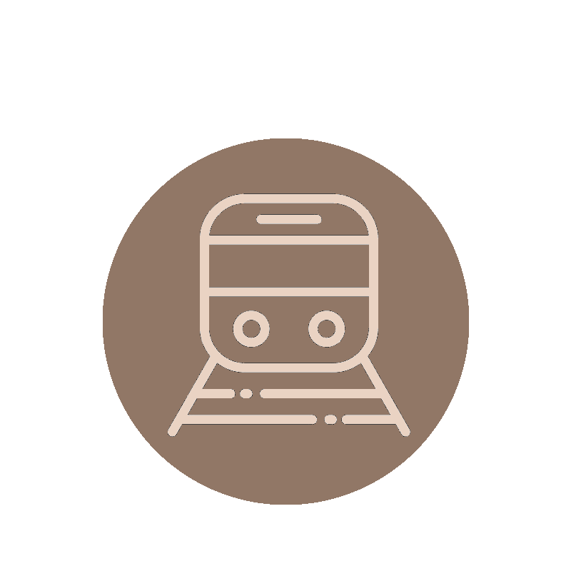
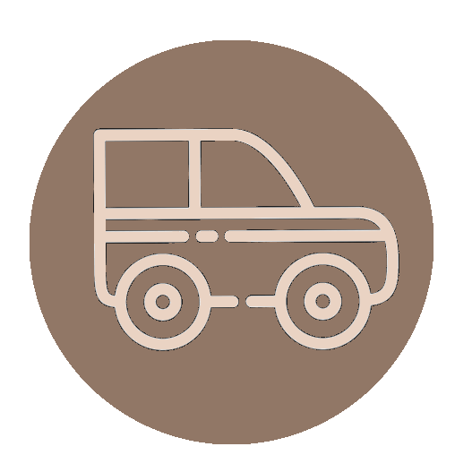

Indikationen
wir sind hier:
Mit dem Flugzeug:
Der nächstgelegene Flughafen ist der Flughafen Salento in Brindisi; nur 75 km von unserem B & B Nehmen Sie die Staatsstraße 379 und folgen Sie an der Kreuzung nach Taranto / Lecce / Brindisi Centro der SS7. Nehmen Sie die Ausfahrt Grottaglie Airport von der SS7 und fahren Sie weiter auf der SS7 Ex. Nehmen Sie die SP109 in Richtung Piazza Castello in Pulsano.

Mit dem Zug:
Der nächste Bahnhof ist Taranto. Um dorthin zu gelangen, nehmen Sie die Viale Duca D'Aosta in Richtung Via Porto Mercantile. fahren Sie entlang Corso Vittorio Emanuele II, Vittorio Emanuele III am Wasser, Viale Virgilio, Viale Jonio und Via Tre Fontane / SP100. Nehmen Sie die Via Lago di Pergusa / Strada Vicinale Rapiddi in Richtung SP104.

Mit dem Auto:
Autobahn A14-Adriatica bis Massafra. Nehmen Sie die Ausfahrt Richtung Taranto / Brindisi / Lecce von der E843 und fahren Sie weiter auf der SS7. Nehmen Sie SP78, SS7ter, SP110 und SP109 in Richtung Piazza Castello in Pulsano.